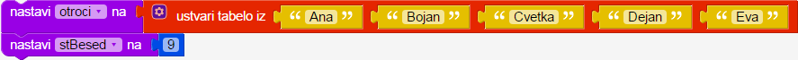

Otroci stojijo v ravni vrsti in se s pomočjo zunanjega »izštevalca« igrajo izštevanko. Izštevalec v vsakem krogu izštevanke šteje od 1 do stBesed in pri tem s prstom potuje po otrocih. Prične pri prvem otroku v vrsti (od tistih, ki so še ostali). Ko pride do konca vrste, ponovno nadaljuje pri prvem otroku. Igra se zaključi, ko ostane samo še en otrok.
Napiši program, ki za podano tabelo imen otrok in število stBesed izpiše imena otrok, ki izpadejo v posameznih krogih izštevanke. V primeru definicij

bi program izpisal sledeče:
Dejan
Ana
Eva
Bojan
V uvodnem delu naredi tabelo z imeni otrok [Matej, Cveto, Ana, Tina, Lučka] in spremenljivko stBesed nastavi na 13.